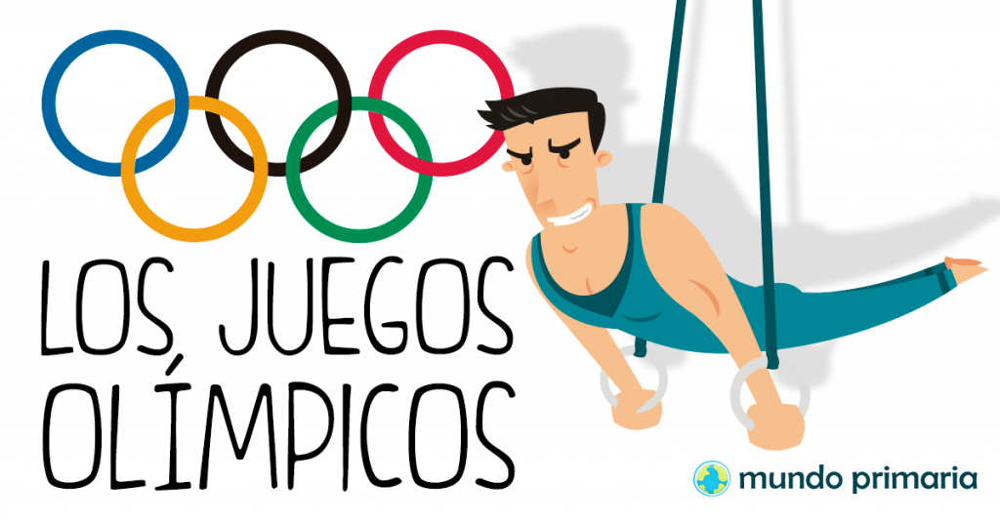

Fuente
Descripción
Esta actividad introduce a los estudiantes al mundo de los Juegos Olímpicos, su historia, valores, y deportes. A través de videos, infografías, y discusiones grupales, los niños colaborarán para investigar diferentes aspectos y crear una presentación conjunta.
Estrategias
- Trabajo en equipo: Los estudiantes se agruparán para investigar temas específicos (como deportes olímpicos, historia, y valores).
- Rotación de roles: Para fomentar la colaboración, cada estudiante asumirá un rol distinto (investigador, diseñador, presentador).
- Retroalimentación entre pares: Los grupos compartirán sus avances y recibirán comentarios de otros equipos.